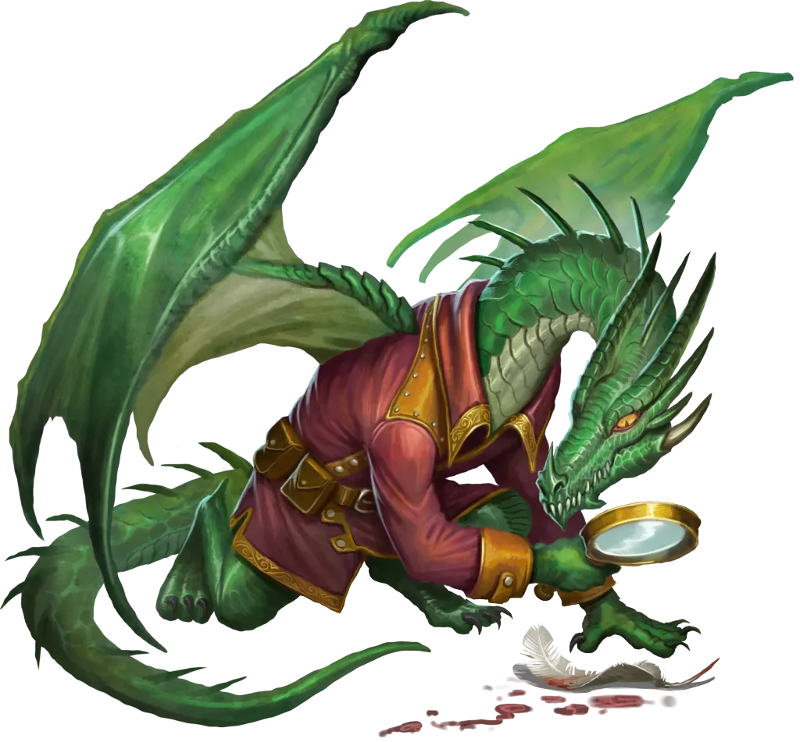

|
巨龙是强横非凡的存在，无论血统或年龄如何，都能在战场上建立赫赫战功。然而其中有一类巨龙截然不同――它们不仅善于战斗，更是为战而生。这些战龙精通百般武艺与各类兵法战事，无论是单打独斗的决战，还是动辄数万大军交锋的宏大战役皆能游刃有余。每一条战龙体内都潜藏着无穷无尽的未开发潜能……而当一场强大的仪式将这份潜能彻底释放时，又会发生什么？ 你是一条狩猎龙，出身于一脉以潜踪猎杀智慧生物而闻名的世系。你会不择手段确保狩猎成功，并将手下败将制成战利品。你属于战龙家族的一员。你的关联伤害类型为毒素，且你的吐息武器为 15 尺锥状，需进行体质豁免。 巨龙特质属性值提升。你的力量或感知值提升 2 点。 年龄。任何年龄段的巨龙都可以举行永恒之光仪式，因此哪怕是一条刚完成仪式的初生永光龙，严格来说也可能已经活了数千岁。不过，仪式澎湃的魔法能量会洗去衰老的痕迹。从仪式中苏醒的初生永光龙洋溢着青春活力与无限潜能。尽管部分学者持不同看法，但只要不死于暴力或其他灾祸，永光龙的寿命与传统派巨龙同样漫长。 阵营。永光龙的龙族血统会强烈影响其信念，但影响程度远不如同血统的传统派巨龙。例如，银永光龙往往是善良的捍卫者，而黑永光龙则往往狡诈刻薄。然而，永光龙深知龙脉并非不可违逆的宿命。任何永光龙都可以完全抛弃先祖的旧习，去开拓属于自己的道路。 体型。除非一条永光龙将自身魔力专注于增大体型（许多永光龙都会这样做），否则它们的体型并不会比常见的类人种族更大。你的体型可在小型或中型之间自选。 速度。你的基础步行速度为 30 尺。 黑暗视觉。你同样具备传统派巨龙的敏锐感官。在距离你 60 尺范围内，你可以将微光光照视作明亮光照，将黑暗视作微光光照。你在黑暗中无法分辨颜色，只能看到灰度的影像。 龙之馈赠。你从巨龙职业所列的龙之馈赠中获得一项龙之馈赠。如果某项馈赠具有先决条件，你必须满足其先决条件才能获得它。 龙类。你的生物种类为龙类，而非类人生物。 天生武器。除常规的徒手打击外，你还获得两种天生武器攻击：啃咬攻击与爪击攻击。你的啃咬攻击造成 1d6 点穿刺伤害；你的爪击攻击造成 1d4 点挥砍伤害。 你必须至少有一只手空闲才能发动爪击攻击。 你在进行爪击攻击的攻击检定和伤害掷骰时可以使用敏捷代替力量，但啃咬攻击不适用。 语言。你能够说、读、写通用语和龙语。 宿命猎物。选择一种非类人生物种类（例如异怪或妖精）或一种特定的类人种族（例如人类或精灵）。每当你进行智力（奥秘、历史、自然或宗教）检定以回想有关你宿命猎物的知识时，你均视为具有相应技能的熟练项，并在检定中加上双倍的熟练加值，而非正常的熟练加值。 恐惧感知。你可以感知到距离你 120 尺内处于恐慌状态的生物的大致方向与数量。 永光狩猎龙背景设定与其他巨龙世系相比，自尊心往往是驱使狩猎龙接受蜕变的首要原因。有时，一条永光狩猎龙可能是屡次辜负家族期望、拼命想要向失望透顶的长辈与亲族证明自己的年轻巨龙；有时，它则是被赏金猎人逼入绝境、急需寻找捷径迅速变强以反败为胜的困兽……又或者是为了诈死脱身，在致命重创中浴火重生，待成长到足够强大后再将昔日企图猎杀自己的仇敌逐一猎杀殆尽。最后，当然还少不了那份老生常谈的贪欲――渴望再添一笔杀戮、再收一件战利品、再为自己的名号镌刻一场辉煌胜利。 要理解永光狩猎龙的行为模式，有一点至关重要：与传统派同族相比，它们的猎物范围要广泛得多。受害者越是五花八门，追猎他们所需的技艺便越是繁杂多样。因此，永恒之光仪式所带来的飞速成长简直完美契合了狩猎龙的需求。这些巨龙绝非一次只猎杀一个目标的寻常猎手――永光狩猎龙堪称行走的屠戮机器，甘愿将整个团体、组织乃至种族赶尽杀绝（尽管平心而论，这倒也没让它们和许多其他冒险者有多大区别）。它们展开杀戮的节奏密集得令人胆寒，通常只有在遭受过多伤害、被迫撤退并通过治疗魔法、医药或连续数日近乎冬眠的休养来恢复伤势时，杀戮才会暂时中断。 至于同族为何会选择举行仪式，传统派狩猎龙自己也有一套理论，其中最普遍的解释便是缺乏归属感。相当一部分永光狩猎龙都是孤儿，在巢穴遭袭后侥幸独活的幸存者中尤为常见；另一些则自破壳起便是独行侠，常常顶撞长辈的教诲、公然违逆族中规训。最重要的是，许多永光狩猎龙比任何事物都更渴望万众瞩目与赫赫恶名。换言之，只要附近有一条永光狩猎龙出没，哪怕它的惯用手法仰赖潜伏渗透，它也十有八九会高调宣告自己的存在。永光狩猎龙就是要让猎物清楚自己就在附近，而且插翅难逃。它们甚至乐于故意“遗弃”战利品――或者不如说是将其公然陈列示众――借此吸引眼球，并肆意嘲弄那些前来调查或追捕自己的人。相比之下，传统派狩猎龙则要谨慎低调得多，只要力所能及，几乎绝不会把战利品留在原地。 毫无疑问，那些本身并非冒险者、也不以猎杀“合理目标”为业的永光狩猎龙，一旦行踪败露，注定会迅速成为冒险者们迫在眉睫的棘手大患。不过，当冒险者明知自己的对手是一条永光狩猎龙时，最好时刻保持高度警惕，甚至不妨疑神疑鬼一些。毕竟，没有什么比把冒险小队耍得团团转更能让狩猎龙感到刺激的了――让小队误以为自己刚刚从连环凶案中拯救了整座村庄，紧接着却见一张友善的熟面孔乃至相伴已久的队友突然撕下伪装，掀起一场血淋淋的背叛。 如椽健笔有些学者或许会因惧怕狩猎龙报复、唯恐被一两条狩猎龙列入下一场狩猎的名单，而不敢动笔撰写关于它们的著述。然而，履行新任巨龙霸主的研究敕令乃是鄙人职责所在；况且说句实话，我对永恒之光仪式的兴趣实在太过浓厚，哪里还顾得上“冒犯忌讳”这种区区小事。 延伸阅读：对应怪物图鉴：狩猎龙 ・ 主书通用巨龙种族特质 ・ 巨龙职业 ・ 本卷新增龙之馈赠 |
 狩猎龙（Hunt Dragon） |